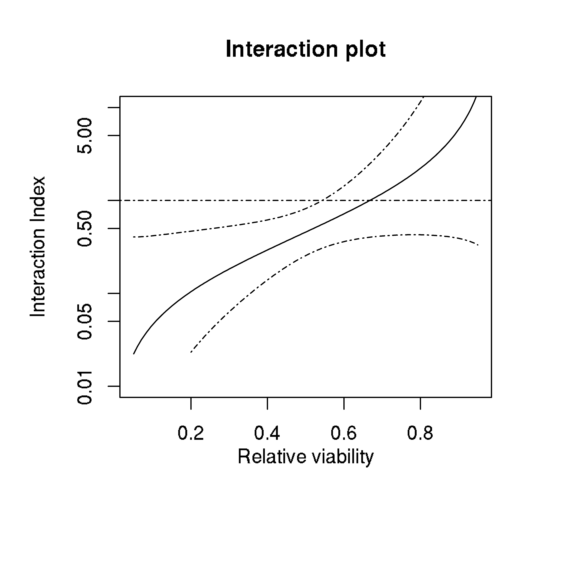
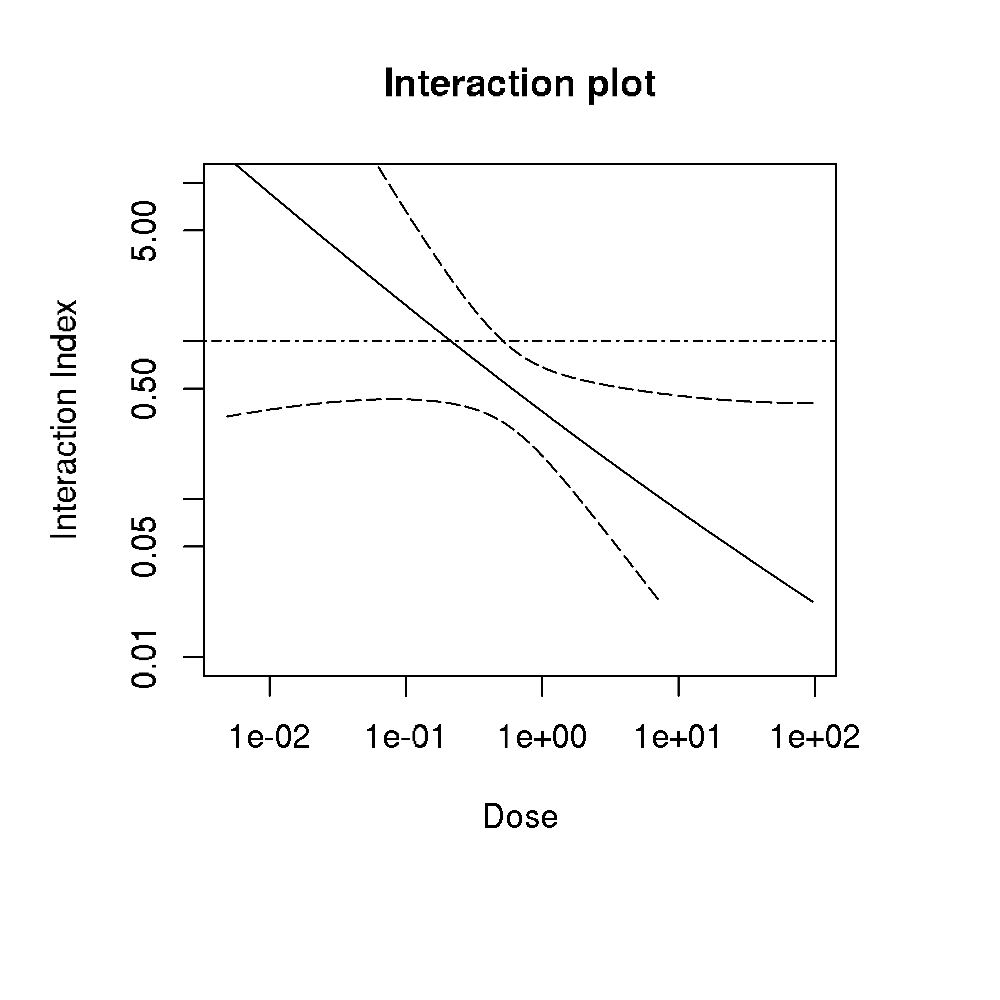
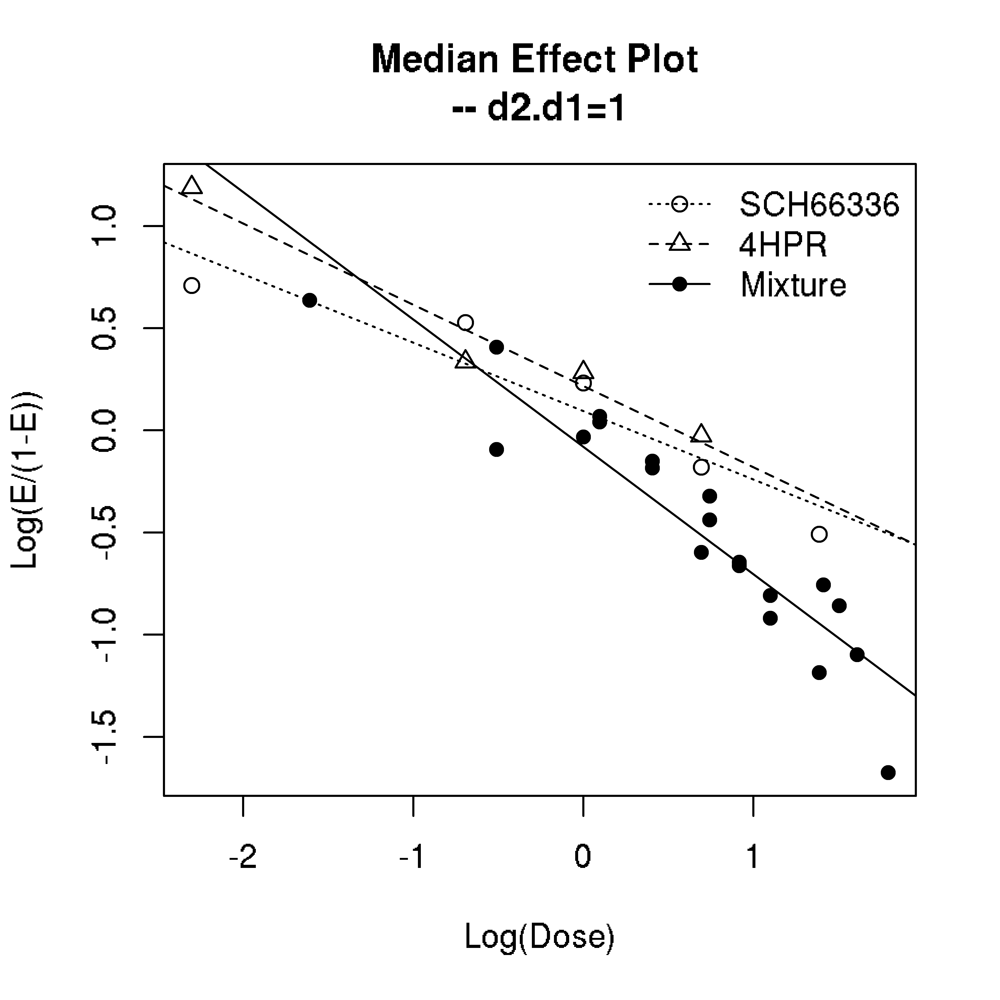
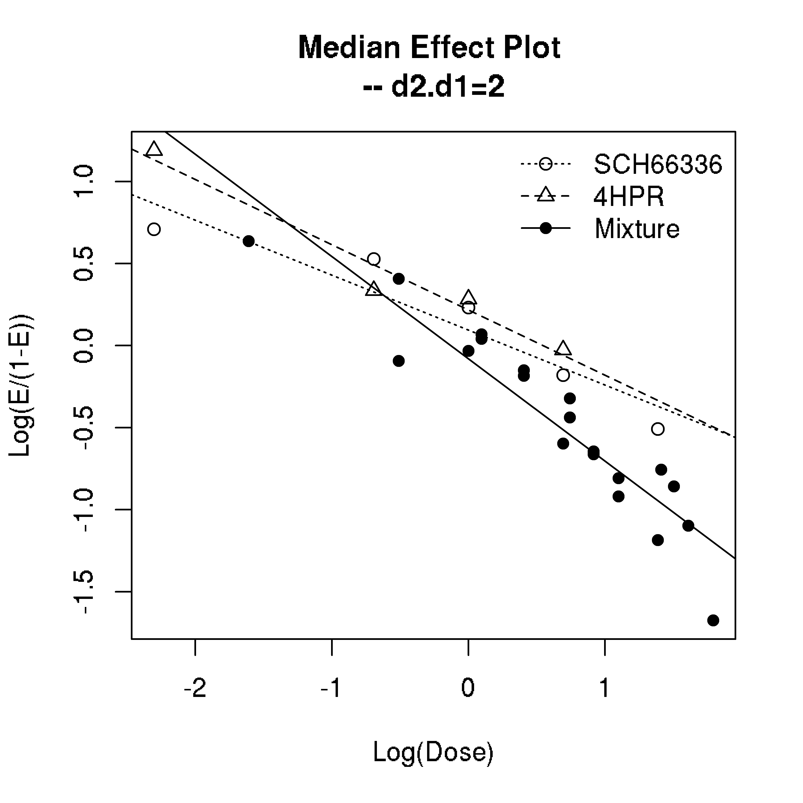
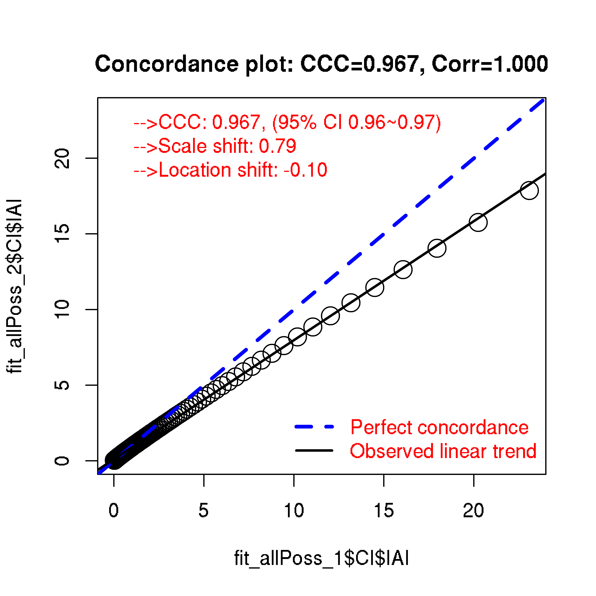

[QC] Outlier Identification]
This package implements the method by Newman, D. The test statistic q=w/s where w is the range of the data and s is sample standard deviation estimated from controls. The null distribution for q has been derived and 1% and 5% quantiles have been given in the paper.
We implement this procedure. In particular, NewmanTest() returns a logic vector specifying whether the observations are outliers.
Usually, drug-response data contains multiple doses. Therefore, we write a wrapper drOutlier() that compute the result for all doses one dose at a time.
We use the ryegrass data from drc package for illustration purpose. The ryegrass data was originally published by (Streibig et al. 2002) which contains 24 concentrations of ferulic acid (a root growth inhibitor) and corresponding root length.
First, we load the drexplorer package and attach the data.
library(drexplorer2)
data(ryegrass)
dose <- ryegrass[, 2]
response <- ryegrass[, 1]At dose=3.75 and significance level 0.05, we find there is one outlier identified:
## potential outlier at dose 3.75
NewmanTest(ref = response[dose == 0], obs = response[dose == 3.75], alpha =0.05)
#> [1] FALSE FALSE TRUEWe also examine all dose levels and find no further outliers:
drOutlier(drMat = ryegrass[, c(2, 1)], alpha = 0.05)
#> [1] FALSE FALSE FALSE FALSE FALSE FALSE FALSE FALSE FALSE FALSE FALSE
#> [12] FALSE FALSE FALSE TRUE FALSE FALSE FALSE FALSE FALSE FALSE FALSE
#> [23] FALSE FALSE[QC] Assessing Reproducibility
Sometimes replicated viability assays are performed. In such case, it is useful to examine if the experiments are reproducible.
A good metric is the Concordance Correlation Coefficient (CCC) that captures both the location shift as well as scale shift between the replicates. The plotCCC function can be used to compute CCC and visualize the replicated data.
library(drexplorer2)
set.seed(100)
r1 <- runif(28)
r2 <- r1+rnorm(28, 0, 0.1)
ccc <- plotCCC(r1, r2,
xlab = 'Simulated response, replicate 1',
ylab = 'Simulated response, replicate 2')
ccc
#> ccc s_shift l_shift ccc_lo ccc_hi Cb corr mean_x mean_y
#> 0.9337 0.9765 0.0758 0.8626 0.9686 0.9969 0.9366 0.5012 0.5182
#> sd_x sd_y
#> 0.2314 0.2259Here we have simulated two response vectors and calculate CCC. The computed CCC value is 0.934, location shift is 0.076, scale shift is 0.976, Pearson correlation is 0.937.
[Single Drug] Fit Dose-Response Models
Below we show how to fit a dose-response model. The drFit() function is a wrapper to the drc and DoseFinding packages. Therefore, all models implemented by either package can be fitted. A model is specified by a modelName to be passed to this function.
Outliers can be identified and removed from model fitting by specifying the parameter alpha (either at significance level of 0.01 or 0.05). To disable outlier identification, set alpha=1.
To remove controls (responses at dose=0) during model fitting, we can set fitCtr=FALSE.
Note that the responses are scaled by mean response at dose=0 before model fitting.
Below we fit a sigmaEmax model. We set alpha=1 to disable outlier removal and fitCtr=FALSE to exclude controls.
library(drexplorer2)
fit_sigEmax_alpha1 <- drFit(drMat = ryegrass[, c(2, 1)],
modelName = "sigEmax",
alpha = 1, fitCtr = FALSE)The result is slightly different when outliers passing significance level of 0.05 is removed.
fit_sigEmax_alpha_o5 <- drFit(drMat = ryegrass[, c(2, 1)],
modelName = "sigEmax",
alpha = 0.05, fitCtr = FALSE)
fit_sigEmax_alpha1@fit
#> Dose Response Model
#>
#> Model: sigEmax
#> Fit-type: normal
#>
#> Coefficients dose-response model
#> e0 eMax ed50 h
#> 1.03 -0.97 2.99 2.81
#>
#> Degrees of freedom: 14
#> Residual standard error: 0.073
fit_sigEmax_alpha_o5@fit
#> Dose Response Model
#>
#> Model: sigEmax
#> Fit-type: normal
#>
#> Coefficients dose-response model
#> e0 eMax ed50 h
#> 1.017 -0.945 2.789 3.384
#>
#> Degrees of freedom: 13
#> Residual standard error: 0.0567- Predict response
One a model is fitted, it can be used to make predictions.
Below we make predictions at the observed dose levels with a previously fitted model. Since the responses are scaled by mean response at dose=0 in model fitting, the predicted responses are also scaled by the mean response from controls. By default, the predict function makes predictions at observed doses.
y <- predict(fit_sigEmax_alpha_o5)
y
#> 1 2 3 4 5 6 7 8 9 10
#> 1.0174 1.0174 1.0174 1.0174 1.0174 1.0174 0.9942 0.9942 0.9942 0.8205
#> 11 12 13 14 15 16 17 18 19 20
#> 0.8205 0.8205 0.3262 0.3262 0.3262 0.1045 0.1045 0.1045 0.0756 0.0756
#> 21 22 23 24
#> 0.0756 0.0727 0.0727 0.0727- Obtain IC values
We implement two approaches for IC value computation. One is to interpolate the observed dosages and try to use the dose that has the predicted response closest to the specified percentile of IC value.
The second approach is to use root finding by setting the fitted model to equal to the specified percentile. In most cases, the result are similar. However, the latter approach may give IC50 values beyond observed dosages and sometimes not robust. Further, a specified IC might be not achievable for the fitted model, in which case the returned dose is either -Inf (a flagger for percentile being too small to be achieved) or Inf (a flagger for percentile being too large to be achieved). The computeIC() function implements both approaches. By setting interpolation=TRUE (the default value) in the computeIC() function, the interpolation approach will be selected.
Computing IC values at different quantiles is also easy. Similar to the drFit() function, different models as well as other options (alpha and fitCtr) can be specified in estimating IC value.
Below we estimate IC50 at different percentiles with the sigmoid Emax model with outlier removal (alpha=0.05) fitted previously. We see that estimates from interpolation and prediction (may be extrapolated) by the model are quite similar except for IC0 and IC100. IC100 from prediction is Inf since the fitted model cannot achieve 100% killing effect (see figure below). IC100 from interpolation is the maximum dose (30 in this case) which is a truncated estimate.
Similarly, since IC0 is not achievable within the observed dose, the prediction estimate of 0.86 is smaller than the minimum dose (0.94). The predicted IC value has advantage over interpolated IC value in the sense that it is not truncated. However, since the value might be extrapolated (estimate being outside of observed dose range), the estimate is more variable.
computeIC(fit_sigEmax_alpha_o5, percent=seq(0, 1, by=0.1), log.d=FALSE, interpolation=TRUE)
#> IC0 IC10 IC20 IC30 IC40 IC50 IC60 IC70 IC80 IC90 IC100
#> 0.94 1.57 1.95 2.28 2.60 2.95 3.36 3.91 4.82 7.86 30.00
computeIC(fit_sigEmax_alpha_o5, percent=seq(0, 1, by=0.1), log.d=FALSE, interpolation=FALSE)
#> IC0 IC10 IC20 IC30 IC40 IC50 IC60 IC70 IC80 IC90 IC100
#> 0.862 1.566 1.952 2.280 2.603 2.951 3.364 3.916 4.829 7.857 Inf[Single Drug] Comparing Multiple Dose-Response Curves
We provide S4 generic functions (plot and lines) for fitted model. As a result, it is easy to compare different models and graphically examine outliers through multiple dose-response curves.
Outliers at significance levels 0.01 and 0.05 are indicated by different colors and symbols. Below we show the LL.3, LL.3u and sigEmax curves in this example corresponding to the three-parameter log-logistic model with lower limit 0, three-parameter log-logistic with upper limit 1 and the sigmoid Emax model.
library(drexplorer2)
data(ryegrass)
fit.LL.3 <- drFit(drMat = ryegrass[, c(2, 1)],
modelName = "LL.3", alpha = 0.05, fitCtr = FALSE)
fit.LL.3u <- drFit(drMat = ryegrass[, c(2, 1)],
modelName = "LL.3u", alpha = 0.05, fitCtr = FALSE)
fit.sigEmax <- drFit(drMat = ryegrass[, c(2, 1)],
modelName = "sigEmax", alpha = 0.05, fitCtr = FALSE)
plot(fit.LL.3, main = '', col = 4, lwd = 2)
lines(fit.LL.3u, col = 5, lwd = 2)
lines(fit.sigEmax, col = 6, lwd = 2)
legend("bottomleft", c('LL.3', 'LL.3u', 'sigEmax'), col = 4:6, lwd = 3, bty = "n")
With these many models fitted, which one should be preferred? One way is to look at the Residual Standard Error (RSE) as below. We see that the LL.3u model is best by the RSE criteria.
sapply(list(fit.LL.3, fit.LL.3u, fit.sigEmax), function(x) x@info$RSE)
#> [1] 0.0699 0.0550 0.0567We also compare the curves using sigEmax model with and without outlier identification.
# no outlier excluded
fit.sigEmax0 <- drFit(drMat = ryegrass[, c(2, 1)],
modelName = "sigEmax", alpha = 1, fitCtr = FALSE)
plot(fit.sigEmax0, main = 'sigEmax model', col = 7, lwd = 2)
lines(fit.sigEmax, col = 6, lwd = 2)
legend("bottomleft", c('alpha = 0.05', 'ignored'), col = c(6, 7), lwd = 3, bty = "n")
[Single Drug] Select the Best Model
We provide a wrapper function, fitOneExp(), incorporating outlier detection, fitting multiple models, selecting the best model and estimating IC values.
Users can specify multiple models from the drc and DoseFinding packages using the models parameter. An example is shown below.
library(drexplorer2)
data(ryegrass)
fitExp <- fitOneExp(ryegrass[, c(2, 1)],
drug = '', cellLine = '', unit = '',
models=c('sigEmax', 'LL.4', 'LL.5', 'LL.3', 'LL.3u', 'logistic'),
alpha = 0.05, interpolation = TRUE)The fitted models can be compared through the plotOneExp function as below:
plotOneExp(fitExp, main = 'Dose-Response Curves from Multiple Models')
The best model based on Residual Standard Error (RSE) can be obtained as shown below.
## This is the bast model:
bM <- fitExp$bestModel
bM
#> [1] "LL.5"
## RSE from all models fitted:
fitExp$RSEs
#> sigEmax LL.4 LL.5 LL.3 LL.3u logistic
#> 0.0567 0.0567 0.0548 0.0699 0.0550 0.0603
## IC50 from all models fitted:
fitExp$IC50
#> sigEmax LL.4 LL.5 LL.3 LL.3u logistic
#> 0.470 0.470 0.432 0.488 0.471 0.480
## best model fitted:
fitExp$fit[[bM]]@fit
#>
#> A 'drc' model.
#>
#> Call:
#> drc::drm(formula = response ~ dose, data = dat, fct = f())
#>
#> Coefficients:
#> b:(Intercept) c:(Intercept) d:(Intercept) e:(Intercept) f:(Intercept)
#> 12.7423 0.0408 0.9904 1.6979 0.1229[Single Drug] Fit Hill Equation
The Hill equation is a special dose-response model. Below we demonstrate how to specifically fit this model by hillFit() function.
We first prepare standardized data where the response is scaled to between 0 and 1. A generic plot function is implemented for the fitted object.
library(drexplorer2)
data(ryegrass)
## prepare standardized data
sdat <- prepDRdat(drMat = ryegrass[, c(2, 1)],
alpha = 0.01, fitCtr = FALSE, standardize = TRUE)$dat
## fit Hill equation
fit_hill <- hillFit(d = sdat$dose, y = sdat$response)
plot(fit_hill)
fit_hill[1:length(fit_hill)]
#> E0 Einf EC50 HS Emax MSE Rsq RSE
#> 1.02918 0.05885 2.99230 2.80933 0.06034 0.00415 0.97086 0.07300[Single Drug] Fit NCI60 Method
The NCI60 method deals with data that contains information for day 0 treatment. The response is between -1 and 1 and thus quite different from the previous analysis.

Below we show how to fit models to estimate GI50, LC50, TGI, AOC_GR, AOC_LD, and AUC_GRI. Similarly, the fitted object can be visualized with a generic plot function.
Notice that the parameter estimates for GI50, LC50 and TGI are based on original drug concentration, not log10 based. On the other hand, the calculation for area under/over curve of AOC_GR, AOC_LD, and AUC_GRI are based on log10 scale.
library(drexplorer2)
data(datNCI60)
fit_nci60 <- nci60Fit(d = datNCI60$Dose, y = datNCI60$Growth/100)
plot(fit_nci60)
fit_nci60[1:length(fit_nci60)]
#> GI50 TGI LC50 AOC_GR AOC_LD AUC_GRI
#> 0.0683 0.2738 0.7900 0.4298 0.0209 0.7746[Drug Comb] Drug Interaction Index
Administering two drugs simultaneously might induce stronger effect than if administered separately. This is called synergism. Experiments to detect synergism (or antagonism which is the opposite) are usually in two forms.
One is the fixed ratio design (ray design) where the ratio of doses between two drugs is a constant. Another one is grid design which means all-possible combinations of drug doses are available.
Two papers have been published regarding to drug interaction index (IAI) by Lee et al, one in 2007 Lee, J. J., Kong, M., Ayers, G. D., & Lotan, R. (2007) and one in 2009 Lee, J. J., & Kong, M. (2009). IAI=1 is the case for additive effect. IAI>1 means antagonistic interaction while IAI<1 means synergistic interaction. The Lee2007 paper described five methods to assess interaction: (1) Lowewe additivity model using interaction index (IAI) (2) Model of Greco et al 1990. This approach uses \(\alpha\) as the metric and it can be related to IAI (3) Model of Machado and Robinson which uses a metric denoted as \(\eta\) (4) Model of Plummer and Short which can also be linked to IAI through the parameter \(\beta_4\) (5) Model of Carter et al that can be linked to IAI through the parameter \(\beta_{12}\). For more details of these models, please refer to Lee, J. J., Kong, M., Ayers, G. D., & Lotan, R. (2007).
The two papers by Lee et al discussed the fixed ratio design and the source code for doing this is incorporated into drexplorer2. To work on grid design, a fixed ratio from the data needs to be selected in order to apply their method. For example, the Lee2007 paper provided an example of grid design. A fixed ratio of 1 was specified in the paper. The specification of fixed ratio would affect the fitted median effect model (see definition in Lee, J. J., Kong, M., Ayers, G. D., & Lotan, R. (2007)) for the drug mixture as well as estimation of IAI. As a result, IAI has a ratio dependent interpretation.
Below we load the UMSCC22B data from Lee, J. J., & Kong, M. (2009). This data has a fixed ratio design. The fitIAI function estimates IAI as well as its confidence interval after specifying dose1, dose2 and effect (between 0 and 1).
library(drexplorer2)
data(UMSCC22B)
fit_fixedRay <- fitIAI(d1 = UMSCC22B[, 1], d2 = UMSCC22B[, 2], e = UMSCC22B[, 3],
name1 = 'SCH66336', name2 = '4HPR')The plotIAI function is then used to generate different plots including IAI versus response, IAI versus dose (predicted dose for the drug mixture, see equation (6) in Lee, J. J., Kong, M., Ayers, G. D., & Lotan, R. (2007)), median effect plot and dose response curves. We can also plot IAI versus response as well as IAI versus dose in one figure by specifying mode=‘both’.
The median effect equation Chou, T. C., & Talalay, P. (1984) is as following: \[E=\frac{(d/D_{m})^m}{1+(d/D_{m})^m}\]
Sometimes replicated viability assays are performed. In such case, it is useful to examine if the experiments are reproducible.
A good metric is the Concordance Correlation Coefficient (CCC) that captures both the location shift as well as scale shift between the replicates. The plotCCC function can be used to compute CCC and visualize the replicated data.
where E is the induced effect of a drug with dose d whose median effective dose is \(D_{m}\) and \(m\) is a slope parameter.
This equation can be arranged as: \[logit(E)=m(log d - log D_{m})\]
The median effect plot shows logit(E) versus log10 dose; The dose response curve shows E versus dose. Below we plot IAI against response. The 95% confidence interval of IAI is shown in dashed line. It can be seen that there is significant synergistic interaction at small relative viability value (<0.5). Although the IAI suggests antagonistic interaction at high viability values, the confidence band shows this is not statistically significant.
## IAI versus response
plotIAI(fit_fixedRay, type = 'IAI', mode = 'response') 
Similarly, we can plot IAI against dose (the sum of dosages from two drugs). The following figure shows that there is significant synergism at high dosage.
## IAI versus dose
plotIAI(fit_fixedRay, type = 'IAI', mode = 'dose') 
The median effect plot is shown below.
## median effect
plotIAI(fit_fixedRay, type = 'medianEffect') 
In Lee, J. J., Kong, M., Ayers, G. D., & Lotan, R. (2007), there is an example data (nl22B2) using grid design. Here we examine the estimate of IAI at different fixed ratios.
data(nl22B2)
fit_allPoss_1 <- fitIAI(d1 = nl22B2$schd, d2 = nl22B2$hpr, e = nl22B2$y1,
name1 = 'SCH66336', name2 = '4HPR', d2.d1.force = 1)
fit_allPoss_2 <- fitIAI(d1 = nl22B2$schd, d2 = nl22B2$hpr, e = nl22B2$y1,
name1 = 'SCH66336', name2 = '4HPR', d2.d1.force = 2)From the median effect plot, we can find that there are 4 data points for drug mixtures at fixed ratio of 1 while only 2 data points are available at fixed ratio of 2.
plotIAI(fit_allPoss_1, type = 'medianEffect') 
plotIAI(fit_allPoss_2, type = 'medianEffect') 
Below we compare IAI estimated from the two scenarios.
plotCCC(fit_allPoss_1$CI$IAI, fit_allPoss_2$CI$IAI)
#> ccc s_shift l_shift ccc_lo ccc_hi Cb corr mean_x mean_y
#> 0.9670 0.7872 -0.0996 0.9632 0.9704 0.9674 0.9996 2.0011 1.6774
#> sd_x sd_y
#> 3.6746 2.8928- Drug Interaction Index With Model Selection
The original Chou-Talalay interaction index approach uses median-effect equation to model drug combination data. This method assumes idealized log-linearity which usually does not hold on real data. Here built upon the drexplorer package which automatically selects the best model without constraining to log-linear model, we try to overcome this limitation by extending the interaction index approach to non-linear functions. Using the UMSCC22B data as an example below. We first fit the model and then plot the IAI estimates.
fitL_mod <- fitIAI_mod(d1 = UMSCC22B[, 1], d2 = UMSCC22B[, 2], e = UMSCC22B[, 3],
name1 = 'SCH66336', name2 = '4HPR', ratio = 1)
plotIAI_mod(fitL_mod, mixtureDose = c('A+B'))
Compared to the original Chou-Talalay method, we now observed the dose-response curves fit better to the data and thus IAI estimates from this approach are more reliable. Since some response values are not achieved in the data, it is hard to extrapolate what dose would achieve those responses. This makes the estimation of IAI unavailable in some regions. Thus, this new approach is more conservative compared to the original Chou-Talalay method.
[Drug Comb] Fit HSA and Bliss Model
Below we illustrate the application of HSA (Highest Single Agent) model and Bliss independence model. Both models first estimate the reference response of combination treatment (assumed to be theoretical additive effect) and then compare the observed response to the reference response for combination treatment. We compute the Area Under Curve (AUC) for the observed response and reference response and use their difference deltaAUC (AUC of observed response - AUC of reference response) to quantify the trend of synergism.
In terms of showing the curves of single and combination treatment, we use the projected dose which is \[d_{proj}=\sqrt{(d1^2 + d2^2)}\]
Based on the \(d_{proj}\) dose of combination treatment, one can infer the corresponding dose of drug 1 (d1) and drug 2 (d2). That is, there is 1-to-1 correspondence among the 3 doses.
library(drexplorer2)
data(UMSCC22B)
## fit HSA_Bliss model
fit_hsa_bliss <- fitHSA_ray(d1 = UMSCC22B$dose1, d2 = UMSCC22B$dose2, e = UMSCC22B$e,
name1 = 'SCH66336', name2 = '4HPR', islogd = FALSE)
## plot deltaAUC_HSA
plotHSA_ray(fit_hsa_bliss, type = c('line', 'HSA', 'se'),
main = sprintf('Delta AUC: HSA=%.2f', fit_hsa_bliss$deltaAUC_HSA),
legend = TRUE, plotSetup = TRUE)
The blue line in the above figure shows the estimates of additive effect from HSA model. Since the combination kills more than the additive effect, it suggests an trend towards synergy, quantified by delta AUC of -0.17, which is defined as the AUC of combination subtracted the AUC of additive effect.
## plot deltaAUC_Bliss
plotHSA_ray(fit_hsa_bliss, type=c('line', 'Bliss', 'se'),
main = sprintf('Delta AUC: Bliss=%.2f', fit_hsa_bliss$deltaAUC_Bliss),
legend = TRUE, plotSetup = TRUE)
Similarly, the purple line in the above figure shows the estimates of additive effect from Bliss model. Since the combination kills less than the additive effect, it suggests an trend towards antagonistic effect, quantified by delta AUC of 0.06.
Notice that different definition of the baseline model for additive effect leads to different result for drug interactions. Usually, HSA model is a less stringent criteria compared to Bliss model.
[GUI Usage]
GUI interface has been shipped with drexplorer2 which is built upon the . After loading the drexplorer2 package, typing
- drexplorerGUI_1()
in the R console will bring out the GUI for fitting dose-response curves.
This GUI assumes input file in comma-separated format or tab-delimited format. The first column is assumed to be dose and the second column is assumed to be response. An optional header can be provided in the first row. Users can click the “Use example data” button for an example run using the ryegrass data. Result files will be saved in a folder called drexplorer_results at the working directory of R session including:
- DoseResponseCurve.pdf: the fitted dose response curve.
- ICtable.csv: estimated IC (inhibitory concentration) values at different percentiles.
- ICtable.csv: outlier status for each data point.
Notice that example input file called ryegrass.csv will be dumped into the result folder if example data is used.
Similarly, typing
- drexplorerGUI_2()
will bring out the GUI for drug-drug interaction analysis.
Users can run the UMSCC22B data set or the nl22B2 data set by clicking the “Use UMSCC22B data” or the “Use nl22B2 data” buttons. Example input files (UMSCC22B.csv and nl22B2.csv) will be dumped into the result folder drexplorer_results after the example run. Similar to the previous GUI, input file can be either a comma-separated file or tab-delimited file. Three columns are needed to run this GUI:
- The first column is assumed to be the dose of drug 1.
- The second column is assumed to be the dose of drug 2.
- The last column is assumed to be response under drug combinations.
A multi-page pdf file will be generated to save various plots (e.g. IAIplot_for_nl22B2.pdf). A comma-separated file will be generated to save estimates of IAI as well as 95% confidence interval (e.g. IAI_CI_nl22B2.csv).